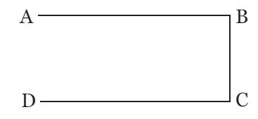

Беседа 1120 от 3877 · Беинса Дуно
Посоки и възможности
Бог царува на небето. Бог царува в живота. Да бъде благословено името Му!
Размишление
(Прочете се резюме от свободните теми.)
Знанието, което човек придобива, трябва да го внесе в съзнанието си, да не се натрупва в ума му като сухи факти. Истинското знание включва само ония неща, които имат своето място. За пример, само онзи камък е ценен, който намира място в градежа на някоя къща. Следователно знание е само онова, което има приложение. Също така и всяка опитност, всяко преживяване трябва да бъде разбрано. Преживяванията имат две страни: приятна и неприятна. Разликата в преживяванията се състои в това, че някой път преживяванията започват с приятно състояние, а свършват с неприятно; някой път обратно: започват с неприятно, а свършват с приятно. Питам: Кой закон регулира тия състояния? Коя е причината, че едно преживяване започва с приятност и свършва с неприятност, а друго започва с неприятност и свършва с приятност? Същите смени в състоянията се забелязват и в разбирането. Някой казва: „Разбрах тази работа“. Обаче към края идва до неразбиране. Друг пък започва една работа с неразбиране, а свършва с разбиране. И при преживяванията, и при разбиранията човек казва: „Излъгах се!“
Питам: Как е възможно да разбира човек нещата и да се излъже? Това показва, че и при разбирането, и при неразбирането човек прави грешки. Тези грешки, именно, създават приятните и неприятните състояния в преживяванията. Но има и трети вид преживявания, които започват тихо, спокойно и така свършват. По-право те започват, без да свършват. Тези преживявания се наричат безкрайни; те имат начало, нямат край. Приятните състояния се дължат на някаква придобивка. И забележете, когато роди дете, майката се радва. Защо? Придобила е нещо. Детето носи живот в себе си за слава Божия. Детето носи сила в себе си за своето повдигане. Детето носи блага, радост за родителите си и за своите ближни. Когато майката роди дете, което не носи в себе си живот за слава Божия, нито сили за своето повдигане, нито радост за ближните си, всички скърбят. Защо? Това дете е бедно и трябва много капитали да отидат след него напразно. Ако е духовна, майката ще вярва, че тези усилия и средства, които се изразходват за това дете, в бъдеще ще дадат резултати; ако не е духовна, ако не вярва в Бога и нейният живот, и този на детето ще бъде тежък.
Сега, от всички се изисква работа, да не чакате наготово, както мнозина правят. Може ли човек да жъне, без да сее? Наистина, Христос казваше на своите последователи, че преди тях други са сели, други са се мъчили, а те ще влязат наготово в техния труд, но това са изключителни положения. Когато имате придобивки в работата си, вие изпитвате приятност, която се отразява в слънчевия възел, или, както някои наричат това място, „под лъжичката“. Когато се вслушва в този приятен трепет, човек може да определи дали дадена работа, която започва, ще се свърши с успех, или не. Който се гневи пък, и той изпитва някакъв трепет, но не под лъжичката. В края на краищата гневът ще предизвика известно стомашно разстройство. На какво се дължи това разстройство? То се дължи на факта, че част от енергията, която трябваше да се употреби за храносмилането, се изразходва при гнева. Вследствие на това храната не може добре да се смила. Не само гневът, но всяко отрицателно чувство в човека е в състояние да предизвика стомашно разстройство. Уплахата, малодушието, неуспехът също създават разстройство в организма. За пример, някой иска да стане учен, но не успява. Друг иска да стане велик музикант, пак не успява. Защо? Защото те искат да постигнат велики работи в късо време. Който скъсява времето, той не разбира живота. Великите прояви изискват голям период от време. Когато поставите някаква велика идея в ума си, не мислете за времето. Когато преследвате някакъв идеал, не слагайте определен срок за постигането му. Ако поставите някакъв срок, години, месеци или дни, за постигане на своите идеали, вие и себе си ще спънете, и своите ближни. За да не се спъвате, вложете идеята в душата си и за времето не мислете. Времето нищо не определя, то само хроникира нещата. Време съществува само за неща, които са се сбъдвали. За неща, които още не са станали, никакво време не съществува.
Някой се радва и казва: „Ще гледам да задържа радостта си цял месец“. – Откъде дойде това желание? Може да се продължи радостта цял месец, но след това ще дойдат такива скърби и страдания, каквито в живота си не сте изпитвали. Понякога радостта трае само половин секунда, но отражението ѝ продължава дълго време. Често в живота на човека идват радости преди той да е получил нещо. Такива радости винаги свършват с разочарование. Някой получава от чичо си в Америка писмо, че му изпраща 10,000 долара. Той се радва, пее, скача, очаква парите. Минават ден, два, три, един месец и той получава от чичо си писмо, че Американското правителство секвестирало тия пари, затова не може да ги прати. Веднага радостта се сменя със скръб и разочарованието идва.
Човек трябва да се изпитва, да наблюдава желанията си, да ги проучва. Например някои желания имат една посока на движение, а две възможности; други желания имат две посоки на движение, а четири възможности; трети желания имат три посоки на движение, а шест възможности и т.н. Желанията в човека и техните възможности се определят от законите на съзнанието. Ето защо, задачата на ученика е да изучава своите мисли, чувства и желания, за да види каква е тяхната посока на движение ; после, да изчисли колко посоки на движение имат те и колко възможности за тяхното постигане.

Понеже всички не сте еднакво музикални, без да искате, т.е. несъзнателно, се спъвате едни други. Защо? Не можете да създадете музикална атмосфера помежду си. Същият закон се отнася и до желанията. За да се постигне някакво желание, необходима е благоприятна за него среда. Човек сам може да бъде и среда, и условие за своите стремежи. Когато е среда за своите желания, човек непременно ще бъде тъпкан, както се тъпче земята, която е среда за растенията. И наистина, растенията са недоволни от земята; те черпят от нея, без да ѝ благодарят. Обаче когато отгоре дойде влагата и пои растенията, те ѝ благодарят. Влагата е условие за растенията. Те не искат да знаят за земята, но очакват дъжда с трепет, с притаено дихание и му благодарят.
И хората постъпват по същия начин: към средата си те се отнасят невнимателно и с неблагодарност, а към условията са внимателни. Бащата и майката са среда за децата си, но колкото и да са добри, децата им са невнимателни към тях. Дойде ли въпрос до някое условие, до някой техен приятел или приятелка, те всякога ги приемат с трепет, очакват нещо от тях. Бащата харчи за сина си 100,000 лева годишно, да следва в странство, но синът не написва на баща си нито едно благодарствено писмо. Обаче някой негов приятел му купил един билет от 100 лева за театър и той веднага пише писмо, бърза да му благодари за приятната вечер, която прекарали заедно. Защо синът постъпва по два различни начина? Защото бащата е среда, а приятелят – условие. Ако приятелят ви започне да се грижи за вас като баща, т.е. от условие стане среда – вие ще престанете да му благодарите, да бъдете внимателни към него.
Ето защо, пазете се да не правите нещата обикновени. Щом веднъж опитате едно желание, втори път не го опитвайте. Пазете се да не стане това желание среда за вас и да изгубите към него вниманието си. Щом желанията губят своя свещен трепет, те стават среда за човека, в която се раждат ред неприятности. Сега, вярвам, че сте разбрали тази идея, но трябва да мислите върху нея. Някои хора не могат да мислят, понеже мозъкът им е обвит с един пласт от утайки. Те трябва усилено да мислят, да се създаде голямо налягане, голямо напрежение в мозъка, което да пропука това наслояване. Това наслояване предизвиква стягане, неразположение в главата, а оттам и тъмнина в съзнанието. Ще мислите усилено, докато разработите мозъка си. Този пласт пречи на човека да се моли и той казва: „Днес нямам вдъхновение за молитва“. – Няма защо да чакате вдъхновение, но ще вземете чука и длетото, ще седнете пред камъка и ще започнете да чукате: днес ще чукате, утре ще чукате, докато най-после разбиете този пласт. Щом разбиете този пласт, ще се отвори път за външния свят. Ще вземете една тръба, ще съедините мозъка си с външния свят, откъдето ще приемате светлина. От този свят ще нахлуе в мозъка ви такава енергия, такава светлина, която ще може да превърне желязото в злато. Учените са започнали вече да приемат тази светлина. Сега и на вас предстои такава работа: да пробиете този пласт, за да нахлуе външната светлина в него. Който веднъж само се е докоснал до този пласт, той знае какво нещо е нещастието, какво – недоволството. В Писанието е казано: „Който победи, той спасен ще бъде“. Тази победа подразбира пробиване на този пласт в мозъка. Ако не можете да го пробиете, и след смъртта си пак ще се намерите в същата черупка. Ако не го пробиете, и в живота, и в смъртта да сте, ще се задушите. Пробиете ли го, вие сте извън смъртта, извън ограничителните условия. Ако сами не пробиете този пласт, ще дойдат някои приятели да ви помогнат, но ще задържат енергията за себе си. Законът в Божествения свят е такъв. Плаща се на онзи, който работи, а не на онзи, който не работи.
И тъй, точка A представлява желание с една посока на движение, но с две възможности. Има желания с две посоки на движения, но с четири възможности. Дотук ще спра. По-нататък на вас предстои да пробивате пласта, да направите дупка, да сложите тръба, която да води към външния свят. Вие трябва да пробиете страната BC. Някой казва: „Аз искам да живея, да стана учен, да намеря Бога, да се свържа с Любовта, Мъдростта и Истината“. Това са ред желания с няколко посоки на движение и с няколко възможности. Например, защо искате да се свържете с Мъдростта? Мъдростта носи светлина, която създава във физическия свят високите и ниските места. Животът създава растенията в низините, т.е. в долините. Истината пък дава насока, направление, в което всички живи същества трябва да се движат. Ученикът трябва да размишлява върху въпроса по кой начин може да придобие известни възможности.
Казвате: „За да се реализира нещо, изисква се вяра“. Каква трябва да бъде тази вяра? Един баптистки проповедник говорил на слушателите си върху стиха, че с вяра и гори могат да се местят. Той толкова се въодушевил от своята проповед, че си помислил: „Вън, пред вратата, седи един сляп човек. Като изляза, ще му кажа: „В името на Господа Исуса Христа, прогледни!“ Тъкмо се засилил към Него, но изведнъж се усъмнил, спрял се и казал: „Ами ако кажа това и слепият не прогледне?“
Той проявил едно желание, дал му една насока и трябвало да очаква две възможности: слепият или ще прогледне, или няма да прогледне. Неговата вяра щеше да реши положението, но понеже се усъмнил, той изгубил първата възможност. Значи слепият нямаше да прогледне. Това може да се сравни с положението, когато някой турчин си служи с чакмаклия пушка. Той цъка, цъка с тази пушка, но тя или хваща, или не хваща. Казвам: Понякога желанията на човека са подобни на такава чакмаклия пушка. Сложиш ги в тази пушка, цъкаш един, два, три и повече пъти, но не хваща, не може да изгърми. Защо? Влажни са тия желания, както барутът се овлажнява. Какво трябва да направиш? Ще извадиш рога си, ще сложиш в него сух барут и ще го запалиш. В модерните пушки няма такива изненади. Рядко се случва някой патрон да не хване. Ако един патрон не хване, в пушката става обратно движение, което изтегля този патрон настрана и на негово място идва друг. Ако и вторият не хване, идва трети, докато най-после един патрон хване. Обаче това рядко се случва. Ако се случи да хване, смяната на куршумите става много бързо, та не се губи време, както беше с турските пушки. Казвам: По-добре е човек да има една идея, изработена от самия него, отколкото да има много идеи, наготово дадени. Когато сам изработи идеята си, той ще разбере процеса на нейното развитие. За желанията пък човек трябва да знае пътя, посоката, по която те се движат. Ако се движат в една посока, ще имат две възможности. А когато желанието има две възможности, то непременно може да се реализира. Според вас какви могат да бъдат тези две възможности? Този въпрос ще оставя на вас като задача, като ребус, вие сами да го разрешите. Щом се натъкнете на желание с повече възможности, вие се намирате вече пред изкушението. Там трябва да бъдете много внимателни.
Една от задачите на ученика е да изучава състоянията на съзнанието си, да види какви промени стават в него. Наблюдавайте каква е светлината на съзнанието ви, когато сте спокойни и когато сте развълнувани; при различни душевни състояния светлината на съзнанието е различна. За пример, ако мислите за някой добър човек и се свържете с него, в съзнанието и в ума ви ще се яви светлина, а в сърцето – топлина. Ако мислите за някой лош човек и се свържете с него, светлината в ума и в съзнанието ви започва постепенно да се намалява; също така и в сърцето настава известно охлаждане.
Следователно, без да съзнавате какви последствия ще имат връзките ви с хората, вие се свързвате с тях и като резултат на това в съзнанието ви настава или мрак, или светлина. Обаче дойдете ли до връзка с Бога, в съзнанието ви се явява непреривна светлина, а в душата ви – дълбок мир. Дойдете ли до връзка с ангелите, пак ще се изпълните със светли мисли и възвишени чувства. Ако пък се свържете с хора от различни краища на света, ще преживеете съответни на тях мисли и чувства. И най-после, ако изпаднете в света на животните, и те ще окажат известно влияние върху вас. Вие трябва да изучавате всички тия състояния и промени в съзнанието, независимо от това дали ги желаете, или не. Вие неизбежно ще минете през тези кръгове на съзнанието, които пък крият за вас известни възможности. Докато човек е на земята, и той ще влияе на другите съзнания, но и те ще му влияят. Той ще се намира под влиянието на средата и на условията на животните, на растенията и на хората. Това, обаче, са задачи, върху които той трябва да работи. За да реши тия задачи правилно, човек трябва да се моли. В това отношение молитвата е работа на човека върху себе си. Молитвата подразбира вътрешна връзка с Божествения свят.
Казано е в Писанието: „Свързвайте се всякога с възвишения свят!“ Това показва, че за когото мислиш, с него ще се свържеш. Каквато мисъл, каквото чувство или желание поддържате в себе си, с тях ще се свържете. Често някоя мисъл или чувство може да направи човека роб. Понеже човек е създал тази мисъл, той може да се освободи от нея. Мислите, които хората създават, са живи форми и вървят след тях, влияят им в добър или в лош смисъл. Където отиде човек, тия мисли навсякъде го преследват. Те са тъй наречените „idée fixe“, които хората сами създават и сами трябва да се освободят от тях. Някой казва: „Хората не ме обичат“. – Това е идея-фикс. – „Аз съм нещастен човек.“ – Това е идея-фикс. – „Аз не съм даровит.“ – Това е идея-фикс. Даровит е онзи, който като се впрегне на работа, по 10 пъти на ден се изпотява. Който иска да развие в себе си някоя дарба или някой талант, той трябва да работи.
Дарбите, талантите се придобиват с усилия, с работа; те не се дават наготово. Ако беше лесно хората да станат ангели, всички щяха да имат ангелски крила. Не е лесно човек да стане ангел! Вие чели ли сте живота на Едисон, да видите през какви мъчнотии и страдания, през какви перипетии е минал, за да достигне копнежите и идеалите на своя ум и на своята душа? Колко пъти той е бил изхвърлян от вагоните навън! Въпреки всичко това той е употребил голям труд и постоянство, приложил е силна воля в работата си, но е постигнал нещо. С концентриране на мисълта си той е постигнал онова, което е било стремеж на неговия ум. В концентрирането си Едисон е идвал до забрава. По този случай разправят един анекдот за него. В деня на сватбата си той се е заел с решаването на една задача и толкова се увлякъл в нея, та забравил, че се жени. Трябвало да дойдат хора, да го дигнат от стола, да му напомнят, че днес е денят на неговата сватба. За Едисон тази задача е била по-интересна от женитбата му. И вие трябва да бъдете така концентрирани, когато искате да постигнете някаква велика идея. Дойдете ли до доброто, трябва да концентрирате мисълта си към него така, че да забравите всякаква женитба.
Сега, изпейте упражнението: „Вяра светла, вяра силна, тя крепи духа, що животът носи“. Вие лесно запомнихте това упражнение, защото стои близо до вас. Всяко нещо, което лесно се възприема, лесно се запомня. Като пеете, вие трябва да различавате такт от ритъм. Един ритъм се различава от друг, вълните им са различни. За да пее добре, човек трябва да има търпение. Търпението се култивира в страданията. Страдаш, че имаш някакъв дефект. Ще работиш върху този дефект, докато го изправиш. В изправянето на дефекта пък ще развиваш търпение.
Бог царува на небето. Бог царува в живота. Да бъде благословено името Му!
Лекция от Учителя, държана на 20 април 1927 г. София.